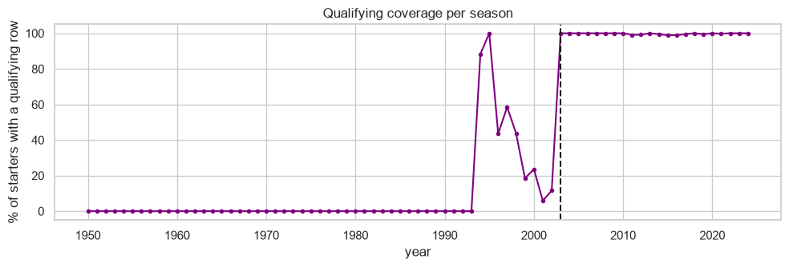
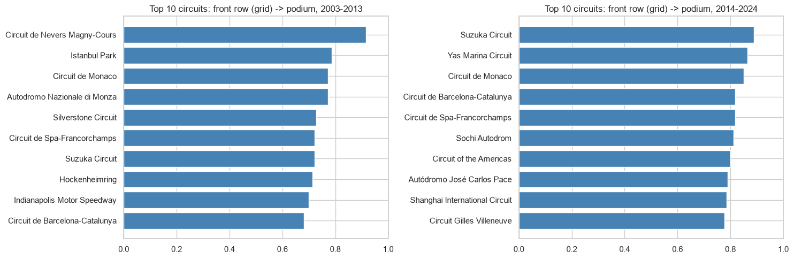
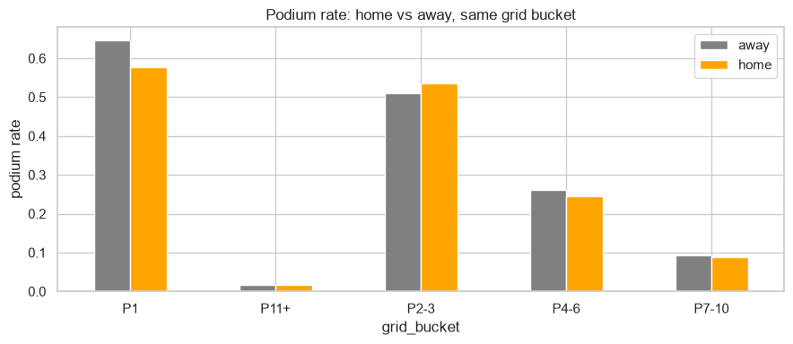
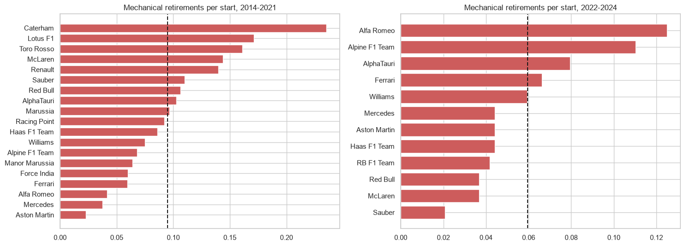
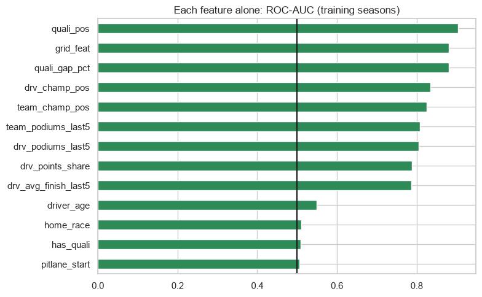
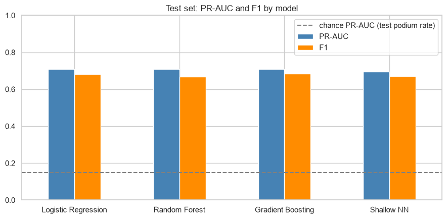
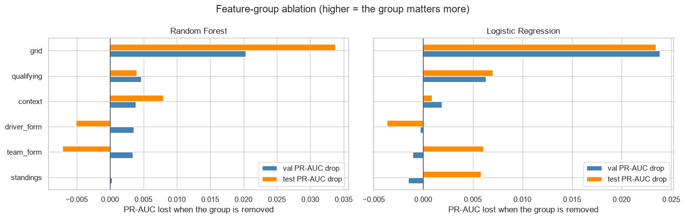
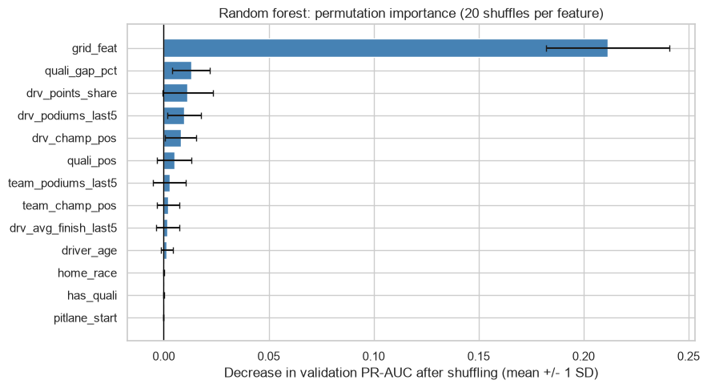
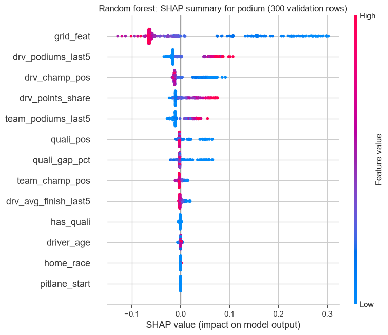
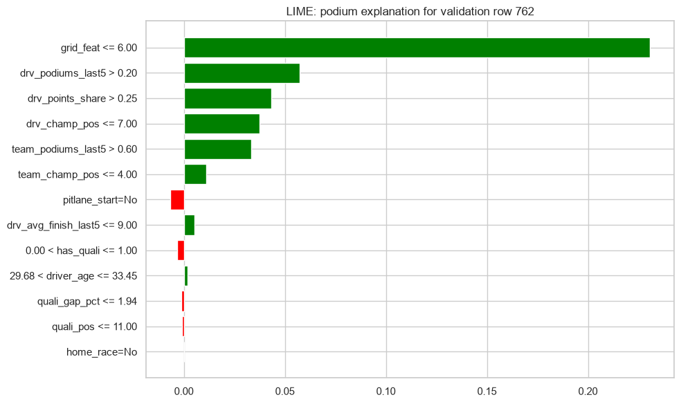

Milestone 1 analytical report · Kaggle Formula 1 World Championship (1950–2024) · companion to F1_Podium_Prediction.ipynb
The 14 linked Ergast CSV tables were loaded as raw text. \N sentinels were converted to missing values and columns were typed: numbers, dates, and lap times converted to seconds. Inconsistent labels were unified (for example United States → USA). All primary keys are unique and complete, and every foreign key matches, with 0 orphans. 176 duplicate (race, driver) rows come from 1950s–60s shared drives; for each, the row with the driver's best finishing position was kept. Entries that never started (DNQ, DNPQ, 107 % rule) were removed.

Front-row starters (grid 1–2) reached the podium 68 % of the time in 2003–2013 and 76 % in 2014–2024, reflecting the dominant hybrid-era teams. The circuit rankings in the two eras agree only weakly (Spearman ρ ≈ 0.30, p ≈ 0.29, 14 circuits), so the ranking changes after 2014. Conversion depends more on each era's competitive order than on the track. Measured by qualifying position instead of grid, the hybrid-era rate is 73.7 %. The two definitions differ because of grid penalties; for example, Interlagos converts 79 % by grid but 65 % by qualifying.

Without controls, home drivers podium less (11.5 % vs 13.8 %). Within each grid bucket, the home and away rates are similar. A logistic regression podium ~ home + grid bucket + decade gives an odds ratio of 0.92 (95 % CI 0.78–1.08, p ≈ 0.29). The interval contains 1, so there is no evidence of a home advantage. This is an association, and nationality is only a rough proxy for "home".

Mechanical retirements are retirements caused by failures such as engine, gearbox or hydraulics; crashes and disqualifications are excluded. The rate is these retirements divided by race starts, for teams with at least 20 starts. The average fell from 9.5 % to 6.0 %. In 2014–2021 the highest rates were Caterham (23.5 %), Lotus F1 (17.1 %) and Toro Rosso (16.1 %). In 2022–2024 they were Alfa Romeo (12.5 %), Alpine (11.0 %) and AlphaTauri (8.0 %). Teams have only about 60–140 starts each in 2022–2024, so small differences are not significant. status is post-race information, so this analysis is descriptive only and is never used as a feature.

Every feature must be known before the start. The current race's result, points, laps, status, lap times and pit stops are excluded, as are standings that include the current race. To show why, points from the same race reaches an AUC of 0.975: almost perfect, because it encodes the answer.
| Group | Features | Why it is valid before the start |
|---|---|---|
| grid | grid_feat, pitlane_start | The starting slot is fixed after qualifying and penalties. |
| qualifying | quali_pos, quali_gap_pct, has_quali | Qualifying ends before the race. The gap to pole in % removes circuit-length effects, and has_quali flags rows where qualifying data does not exist. |
| driver form | drv_podiums_last5, drv_avg_finish_last5 | Rolling over the previous 5 races only (shift(1) before rolling); verified on 100 random rows, with 0 mismatches. |
| team form | team_podiums_last5 | The same past-only rolling window, applied to the constructor. |
| standings | drv_points_share, drv_champ_pos, team_champ_pos | Taken from standings after the previous round of the same season. |
| context | driver_age, home_race | Known from date of birth, nationality and circuit country. |

The data is split by season so that the model is always tested on the future: train 1950–2017 (22,326 rows), validation 2018–2021 (1,620) and test 2022–2024 (1,359; new technical rules from 2022). Missing values are filled with the training median, and features are standardised for logistic regression and the neural network. Both steps are fit on train only.
| Experiment (logistic regression) | val PR-AUC | test PR-AUC |
|---|---|---|
| E1: fit on train only (correct) | 0.7059 | 0.7102 |
| E1: fit on all data before split (leaky) | 0.7057 | 0.7095 |
| E2: impute → scale | 0.7059 | 0.7102 |
| E2: scale → impute | 0.7059 | 0.7096 |
The differences appear only in the 4th decimal. The leaky version is still wrong in principle, because it uses test statistics during training. A third experiment trained only on 2003–2017, where qualifying data is complete. It changed PR-AUC by less than 0.01 for both models (LR 0.706 → 0.700 on validation; RF 0.725 → 0.729), so all seasons are kept and has_quali flags the old rows.
Four models are trained on the same rows and features: logistic regression (baseline), a random forest (12 configurations searched), gradient boosting (3 setups) and a shallow neural network (Keras, 3 architectures × 2 L2 strengths, early stopping). Hyperparameters and decision thresholds are chosen on validation only. Each threshold maximises validation F1, and the test set is only reported.
Metric. Only about one row in seven is a podium, so accuracy is misleading: always predicting "no podium" scores 86 %. ROC-AUC is also inflated, because most of its credit comes from ranking the many non-podium rows correctly. The primary metric is PR-AUC (average precision), which measures how well real podium finishers are ranked at the top. F1 at the chosen threshold is the secondary metric, because it reflects the yes/no decision a user would act on.
| Model | Val PR-AUC | Test PR-AUC | Val F1 | Test F1 | Test ROC-AUC | Threshold |
|---|---|---|---|---|---|---|
| Logistic regression (baseline) | 0.7059 | 0.7102 | 0.7229 | 0.6816 | 0.9337 | 0.346 |
| Random forest | 0.7254 | 0.7079 | 0.7195 | 0.6667 | 0.9408 | 0.449 |
| Gradient boosting | 0.7094 | 0.7093 | 0.7140 | 0.6847 | 0.9422 | 0.418 |
| Shallow neural network | 0.7264 | 0.6955 | 0.7203 | 0.6707 | 0.9381 | 0.289 |

Reading. All four models fall within about 0.02 PR-AUC of each other. The neural network is best on validation (0.7264), just ahead of the random forest (0.7254). On test, however, the logistic-regression baseline is marginally best (0.7102). The non-linear models therefore do not clearly beat the baseline: most of the signal is the near-monotonic grid effect, which a linear model already captures. The random forest is used for explanation and inference because it is 0.001 behind the validation leader and supports exact tree-based SHAP. This does not mean it is statistically better.
Each group was removed in turn and the model retrained with the same hyperparameters and a re-tuned threshold. The random forest was averaged over 3 seeds; differences below about 0.005 are noise. The full random forest scores 0.725 PR-AUC on validation and 0.709 on test.
| Removed group | RF val drop | RF test drop | LR val drop | LR test drop | RF test PR-AUC, this group only |
|---|---|---|---|---|---|
| grid | 0.020 | 0.034 | 0.024 | 0.024 | 0.647 |
| qualifying | 0.003 | −0.007 | 0.006 | 0.007 | 0.646 |
| driver form | 0.004 | −0.005 | 0.000 | −0.004 | 0.550 |
| team form | 0.000 | 0.000 | −0.001 | 0.006 | 0.480 |
| standings | 0.004 | 0.008 | −0.002 | 0.006 | 0.562 |
| context | 0.005 | 0.004 | 0.002 | 0.001 | 0.144 |

Grid is the only group whose removal clearly hurts in both models and both splits. Qualifying, form and standings are each strong on their own but redundant with grid and with each other, so removing any one of them costs almost nothing. Context is no better than chance on its own (0.144, about the podium rate), which agrees with Q2. Small negative test drops come from a single, small test split and are not taken as a reason to remove features.
Permutation importance (validation, 20 shuffles each): shuffling grid_feat lowers PR-AUC by 0.2115. Next come qualifying gap (0.013), points share (0.011), recent podium rate (0.010) and championship position (0.008). Most non-grid drops are smaller than their shuffle variability. SHAP (TreeExplainer, 300 validation rows) ranks grid first as well (mean |SHAP| 0.090), followed by recent podium rate (0.026), championship position (0.022) and points share (0.019). A low grid number, a high recent podium rate, a high points share and a good championship position all push predictions towards a podium. The two methods measure different things (loss of score vs contribution to each prediction), so their middle rankings differ. Correlated features also share credit.


Local explanation (LIME). The case explained is Valtteri Bottas at the 2019 Mexican Grand Prix. It was chosen because its forest probability (0.449) is the closest to the threshold, without looking at the outcome. The strongest supporting conditions are a top-six start (+0.231) and a recent podium rate above 0.20 (+0.057), followed by points share and championship position. LIME's local surrogate predicts 0.439, close to the forest's value, with a local R² of 0.86. Bottas did finish on the podium.

predict_podium(record) takes a single driver-race record (a dict, a Series or a one-row DataFrame). It fills missing or absent features with the training-fitted median imputer, applies the random forest and its validation threshold (0.449), and returns the probability, the decision and the list of imputed features. The notebook demonstrates it on a complete test record and on the same record with three values blanked and one left out. Median imputation pulls an incomplete record towards an average driver, so predictions with many imputed features should be trusted less.
has_quali flag for old seasons, and real values for modern ones.